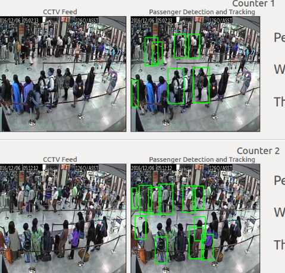
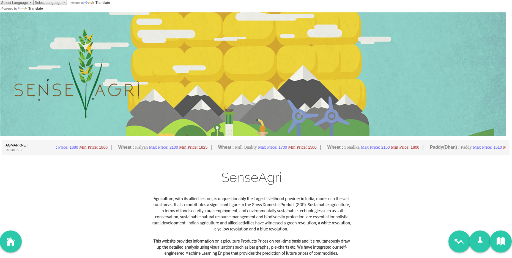
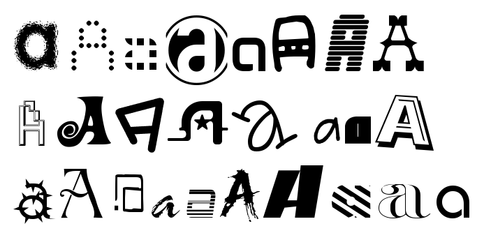

- Sept-2018 | Paper Accepted at DICTA 2018.(Crack-pot: Autonomous Road Crack and Pothole Detection)
- Aug-2018 | Started working with Dr. A Lynn Abbott on Text Detection with Xiaolong Li in CESCA Laboratory.
- Aug-2018 | Joined Virginia Tech. (Computer Eng.) for M.S.
Updates
About Me
- First year Grad. student at Virginia Tech. in Computer Engineering.
- My research areas are Computer Vision, Robotics, Machine Learning and Deep Learning.
- I am currently working as Research Assistant under A. Lynn Abbott on robust Text Detection in real-time videos with pose information.
- I have previously worked with Prof. Subhashis Banerjee and Chetan Arora on applications of Monocular SLAM in T.V. broadcasts and movies.
- I have worked with Simon Nikalus from Portland State University on Face Alignment Project for OpenCV in Google Summer of Code' 2017.
- I have also worked with Dr. O.P. Verma on Text deblurring using Generative Adversarial Networks and Path Planning Algorithms on Fixed-wing UAV's
- Worked with Shankar M. Vnkeatesan in Samsung Advanced Technologies Laboratory on Samsung's Spotlight Application and 3D face construction using single face image.
- I have also worked with Dr. Ruchika Malhotra on project Aero and SenseAgri based on the application of Deep Learning in fields of People Management and Agriculture.
- I have also worked with Dr. Akshi Kumar on Text Classification Using Soft Computing.
Experience
Google Summer of Code
Mentor | Open Food FactsComputer Vision and Machine Learning | May 2018 - Aug 2018
- Mentored a GSoC student in developing a nutrition table detector and nutrition information extractor in wild scenes.
- Extensively used Single Shot Text Detector (SSTD) and CTPN networks.
- Incresed Detection accuracy from 62% to 86%.
Wasp3D
Research and Development Engineer | Computer Vision | Dec 2017 - May 2018
Guide: Subhashish Banerjee(Professor IIT Delhi) and Chetan Arora (Assistant Professor IIIT-Delhi)
- Developed a novel SLAM algorithm based on randomly distrubuted planar features used for augmenting synthetic objects in movies and T.V. broadcasts.
Google Summer of Code
Summer Intern | Computer Vision and Machine Learning | May 2017 - Aug 2017
Mentor: Simon Nikalus and Bart Massey(Portland State University)
- Implemented “One Millisecond Face Alignment with an Ensemble of Regression Trees” by Vahid Kazemi and Josephine Sullivan for OpenCV
- Coded Gradient Boosted Regression Tree’s with a custom feature selection prior. Achieved both speed and accuracy quoted in the paper.
Samsung Research, Bangalore
Research Intern | Computer Vision and Machine Learning| June 2017 - July 2017
Manager: Shankar M. Venkatesan (Principal Consultant)
- Worked in Samsung’s Advanced Technologies Laboratory with the CTO team
- Developed Dynamic Face relighting for Samsung’s Spotlight application and worked on 3D Selfie concept with a single face image using CNN’s on 3DMM
Beehive Systems
Visiting Researcher | Computer Vision and Robotics | Aug 2016 - Present
- Developed a robust system to obtain the camera pose using ARuco.
- Developing a module to Augment graphics in non‐studio environment.
Staqu Technologies
Research Intern | Computer Vision and Deep Learning | June 2016 - July 2016
Mentor: Atul Rai (CEO Staqu)
- Developed a system that sorts and segments images on the basis of the color of clothing using Deep Neural Networks for Segmentation.
- Developed a proprietary algorithm to extract and match fingerprints obtained using smartphone camera sensor.
Unmanned Aerial Systems Team, Delhi Technological University(UAS‐DTU)
Autopilot Engineer | Computer Vision and Robotics | Nov 2014 - Dec 2015
Guide: Dr. N. S. Raghava (Associate Professor D.T.U.)
- Funded by Lockheed Martin for development of UAV’s tailored according to specifications of India Aviation Industry.
- Successfully developed autonomous path planning algorithms for fixed-wing UAV’s in dynamic environments using Voronoi Tessellation, A* and POMDP.
- Developed indigenous Ground Control Station for autonomous flight planning for swarm of UAV’s.
Inventorykart
Co-founder | Software Developer | June 2015 - Aug 2015
- Developed a software to manage inventory of the user and link that inventory to the sites database
Research
Virginia Tech. | CESCA (Center for Embedded Systems for Critical Applications)
Research Assistant | CV-ML | Aug 2018 - Present
Guide: Dr. A. Lynn Abbott(Professor IIT Delhi) (Assistant Professor IIIT-Delhi)
- Working on robust Text Detection in Videos.
IIT-Delhi and IIIT-Delhi | Vison and Graphics Lab
Visiting Researcher | Computer Vision | Aug 2016 - Present
Guide: Subhashish Banerjee(Professor IIT Delhi) and Chetan Arora (Assistant Professor IIIT-Delhi)
- Worked on SLAM’s for Dynamic environment for Navigational applications on MAV’s using Segnet and Pop-Up SLAM.
- Developed a robust system for pose estimation on monocular cameras for Augmented Reality applications.
Delhi Technological University | Vision and Artificaial Intelligence Lab
Reserach Assistant | Deep Learning | Jan 2017 - May 2017
Guide: Dr. O. P. Verma(Professor D.T.U.) and Dr. Akshi Kumar (Assistant Professor D.T.U.)
- Worked on text deblurring and image generation using Generative Adversarial Networks.
- Worked on Text summerization and classification comparing different feature selection techniques and classification models
Publication and Reports
[1] V. Darbari, S. Gupta and O. P. Verma, "Dynamic motion planning for aerial surveillance on a fixed-wing UAV," 2017 International Conference on Unmanned Aircraft Systems (ICUAS), Miami, FL, USA, 2017, pp. 488-497. doi: 10.1109/ICUAS.2017.7991463
Path Planning | Machine Learning | Surveillance
[2] S. Gupta, S. Anand and A. Rai, “Fingerprint Extraction using Smartphone Camera”, cs.CV, CoRR, abs/1708.00884
Computer Vision | Biometrics | Image Acquision
Projects

Aero Computer Vision | Deep Learning
Guide: Dr. Ruchika Malhotra(Assistant Professor D.T.U.)
- Developed a COTS leveraging Machine Learining, Cloud Computing and Computer Vision for Ministry of Civil Aviation and Airports Authority of India to calculate throughput of counter personal at Airports.
- The project is fully funded by Government of India. In pilot project, it will be installed on all the Govt. owned airports.
- For robust person detection, we use fine tunned darknet(YOLO) and for tracking a bag of words using ORB features.

SenseAgri Machine Learning
Guide: Dr. Ruchika Malhotra(Assistant Professor D.T.U.)
- Developed smart Indian agriculture website which predicted the price of different agricultural commodities in the local market taking parameters like soil quality, weather, humidity etc.. Achieved around 80% accuracy.
- The project was awarded best presentation in Digital India Hackathon.

Database Augmentation using Generative Adversarial NetworksDeep Learning
Guide: Dr. O. P. Verma(Professor D.T.U.)
- Used not MNIST dataset to augment the database with images generated from GAN.Ran state of the art classification algorithms on this augmented database.
- The augmentation marginally improved the accuracy of classification.
Aadhar Card KYC API Computer Vision and Machine Learning
- Developed a system that provides remote KYC to Aadhar Card Holders using any ordinary Smart Phone Camera, thus eliminating the use of dedicated Fingerprint Sensors. Based on Local Binary Patterns, HOG features and Support Vector Machines.
Multi-UAV for Mission Planner Robotics
- Developed a module for Open source UAV flight planning software Mission Planner which enables to control Multiple UAV’s from a single Ground control station.
- Used the Multiplexing property of telemetry antenna to connect to all devices simultaneously. Designed a UI/UX to plan mission on multiple UAV’s.

Text-Classification using Soft ComputingMachine Learning
Guide: Dr. Akshi Kumar(Assistant Professor D.T.U.)
- Minor Project : Compares all the major Text Classification Techniques like Naive Bayes , Decision Trees and Support Vector Machines with various Feature Extraction and Feature Selection Techniques namely Chi-squared, Information Gain, Principal Component Analysis(PCA) etc.
InteroperabilityNetworking
- Designed a module that remotely logs on to a server and download/upload the relevant information to it
- It also displayed the same data on Google Earth interactively.